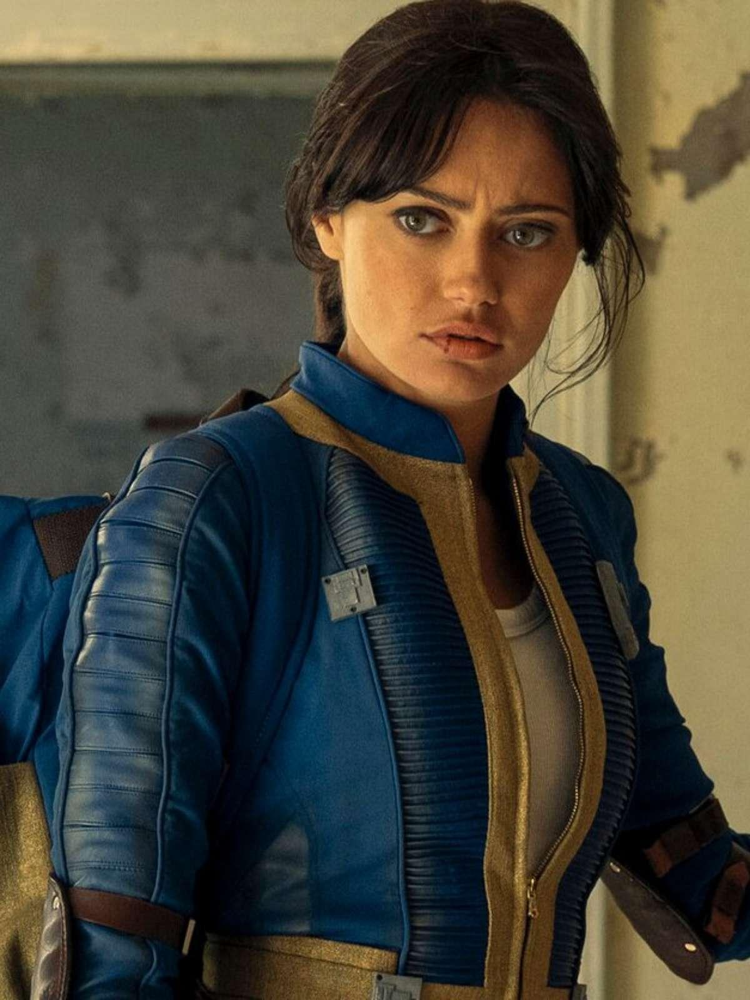
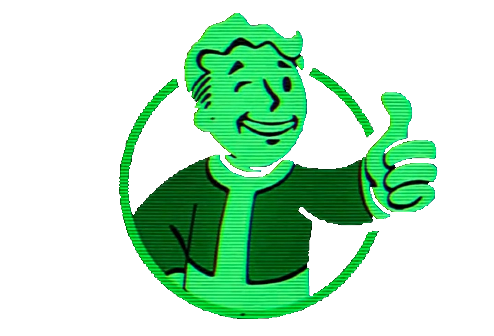
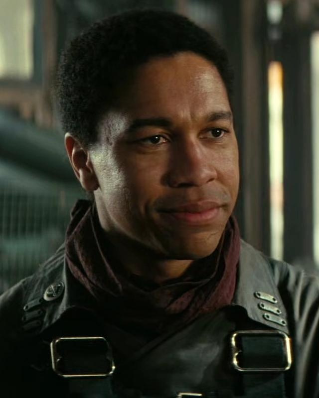
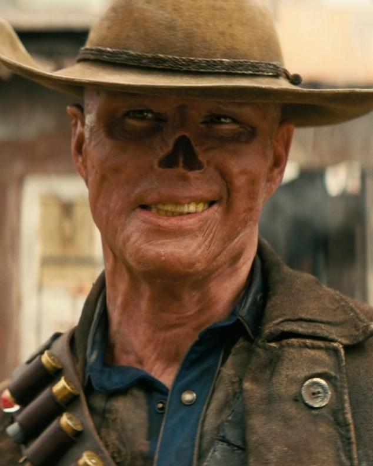
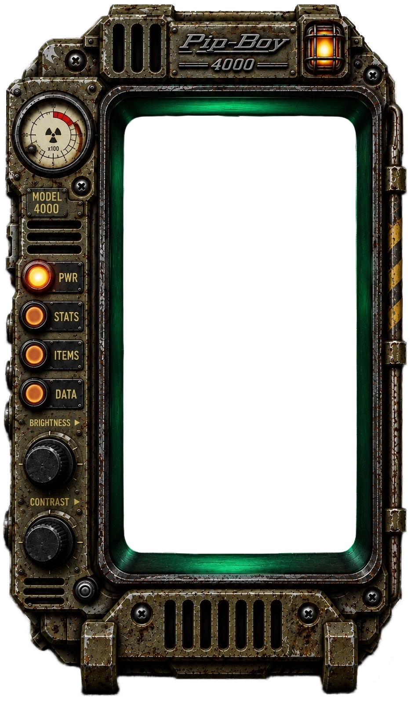

LUCY MACLEAN
Habitant del Refugi 33, optimista i idealista. Descobrirà que el món exterior és molt diferent del que havia imaginat.
[ ARXIU DESCLASSIFICAT ]
SOBREVIURIES AL YERMO?

> DESCOBREIX LA HISTÒRIAL'any 2077, una guerra nuclear va transformar el planeta en un territori devastat.
Dos-cents dinou anys després, Lucy MacLean abandona la seguretat del Refugi 33 i s'endinsa en un món exterior on la supervivència, la violència i les desigualtats formen part de la vida quotidiana.
A través de tres protagonistes amb visions molt diferents, Fallout combina aventures, humor negre i una crítica a les contradiccions de la societat.
[ DOCUMENT SENSE ESPÒILERS ]

Habitant del Refugi 33, optimista i idealista. Descobrirà que el món exterior és molt diferent del que havia imaginat.

Un jove vinculat a la Germandat de l'Acer que busca trobar el seu lloc en un món violent i desigual.

Un caçador de recompenses marcat per la radiació i per un passat que connecta amb el món anterior a les bombes.
Fallout és molt més que una sèrie sobre un món destruït per una guerra nuclear. És una història que combina ciència-ficció, acció, humor negre i crítica social.
La sèrie destaca per la seva estètica retrofuturista, que barreja la imatge dels anys cinquanta amb tecnologia avançada i paisatges postapocalíptics.
Els protagonistes tenen maneres molt diferents d'entendre el món. Les seves decisions ens fan reflexionar sobre la moral, el poder i la supervivència.
Malgrat la violència i la destrucció, Fallout utilitza l'humor per qüestionar el consumisme, les desigualtats i els abusos de poder.
[ RECOMANACIÓ: ALTAMENT FAVORABLE ]
[ FI DE L'ARXIU - VAULT-TEC ]
